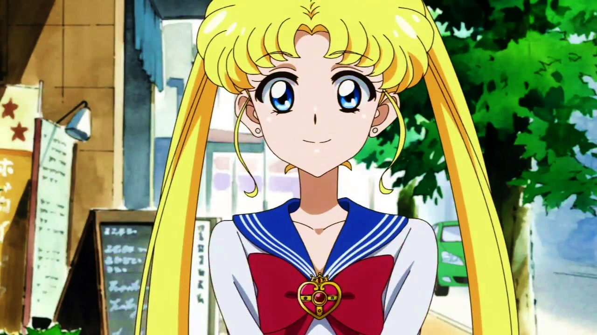
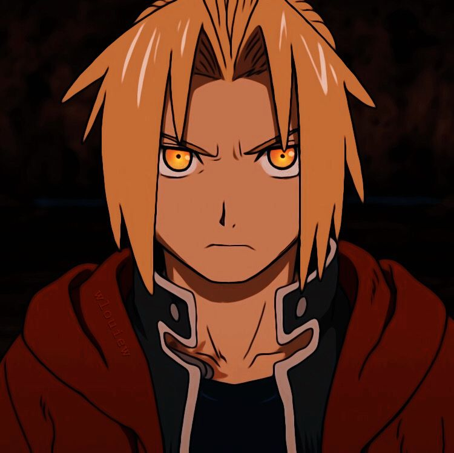

1. Goku(Dragon Ball)
Goku o mejor conocido como Son Gokū es el protagonista de la serie de manga y anime Dragon Ball. Fue creado por Akira Toriyama en 1984. Al comienzo de la historia, Gokū aparece como un niño que practica las artes marciales y que posee una cola de mono y una fuerza sobrehumana, pero más adelante se revela que es un extraterrestre de la raza ficticia saiyajin, y que su nombre original es Kakarotto.
2. Naruto Uzumaki (Naruto)
Naruto Uzumaki es el personaje protagonista del manga y anime Naruto, creado por el mangaka Masashi Kishimoto. En un principio, Kishimoto quería crear un personaje que resultara «simple y estúpido», aunque luego lo dotó con un «pasado oscuro» para, según sus propias palabras, hacerlo único
3. Monkey D. Luffy (One Piece)

Monkey D. Luffy es un personaje de ficción y el protagonista principal del manga One Piece creado por Eiichirō Oda. Es apodado por los demás como "Sombrero de Paja", debido a su característico sombrero que lleva desde niño. Su cuerpo está hecho de goma, debido a haberse comido la Fruta Goma Goma.
4. Sailor Moon/Usagi Tsukino (Sailor Moon)
Usagi Tsukino o Sailor Moon, Pretty Soldier Sailor Moon, Bishōjo Senshi Sērā Mūn, conocida en España como Bunny Tsukino y en Latinoamérica como Serena Tsukino, en la serie original es un personaje ficticio en la franquicia japonesa Sailor Moon y la protagonista principal.
5. Ichigo Kurosaki (Bleach)
Ichigo Kurosaki es un personaje ficticio de la serie de manga Bleach creada por Tite Kubo. Él es el protagonista principal de la serie, quien recibe poderes de segador de almas después de hacerse amigo de Rukia Kuchiki, la segadora de almas asignada a patrullar alrededor de la ciudad ficticia de Karakura.
6. Edward Elric (Fullmetal Alchemist)
Edward Elric, comúnmente llamado Ed, es un personaje y protagonista del manga y anime Fullmetal Alchemist creado por Hiromu Arakawa. Edward posee el título de Fullmetal, conocido como «Fullmetal Alchemist», es el alquimista estatal más joven en la historia del país ficticio Amestris.
7. Pikachu (Pokémon)

Pikachu es un personaje perteneciente a la franquicia Pokémon, que hizo su primera aparición en los videojuegos Pokémon Rojo y Azul, siendo el Pokémon número 25 de la lista de Pokémon registrada en el Pokédex nacional.
8. Astro Boy (Astro Boy)
Astro Boy es una serie de manga escrita e ilustrada por Osamu Tezuka, y publicada desde 1952 a 1968. La historia sigue las aventuras de un androide llamado Astro Boy y una variada selección de otros personajes
9. Astro Boy (Astro Boy)
Lelouch Lamperouge es el protagonista principal y Héroe byroniano de las series Code Geass y Code Geass R2. Es el hijo "dado por muerto" de la familia imperial de Britannia. Apodado Lulu por sus amigos, es un muchacho de 17 años.
10. Light Yagami (Death Note)
Light Yagami es un personaje ficticio creado por Tsugumi Ōba y Takeshi Obata como el protagonista del manga y anime Death Note. Light es un adolescente cuyo intelecto y capacidad para formular estrategias son su mayor fortaleza.